pacman::p_load(sf, spNetwork, tmap, tidyverse, spatstat)Geospatial Analysis for Public Good: A Data-driven Perspective on Road Traffic Accidents in the Bangkok Metropolitan Region
In this exercise, we apply spatial point pattern analysis to analyse the distribution of road traffic accidents in the Bangkok Metropolitan Region. We demonstrate how kernel density estimation can be used to visualize hotspots in a network constrained and non-network constrained context. We use different approaches to display charts side by side, especially to compare hotspots across different time dimensions or different conditions. Finally, we demonstrate how K- and G-functionss can be used to support any claims on the randomness, clustering or dispersion of a spatial point distribution.
A. Getting Started
A.1 Background
Road traffic accidents account for 1.19million deaths and up to 50 million non-fatal injuries according to a report by the WHO last year.
The same report identifies major risk groups: low- and middle-income countries, (esp in Africa and Europe) the working population, and males. It also identifies some key risk factors which include human error, speeding, driving under the influence of alcohol, distracted driving, unsafe road infrastructure, unsafe vehicles, and law enforcement. Most of the factors identified are behavioral in nature but do not discount that other factors may also contribute to a higher risk of occurrence.
Within Southeast Asia, Thailand has ranked the highest in terms of incidence of road traffic accidents with an average number of of 20,000 deaths a year or 56 a day. The country has also seen an increase in the number of accidents from 2014 to 2021. A large 19% of these accidents occurred in national highways, and the chances of encountering an accident-prone zone was found to be 66%.
A.2 Objectives
This study aims to take a deeper look into the road accidents in Thailand, focusing on the Bangkok Metropolitan Region (BMR) which contains the capital Bangkok, and five neighboring provinces. (Nonthaburi, Nakhon Pathom, Pathum Thani, Samut Prakan, Samut Sakhon)
As most literature has focused on behavioral and environmental factors, the study will focus on identifying spatiotemporal factors influencing the occurrence of road accidents in BMR. At the minimum, the study deliverables include the following:
Visualization of spatiotemporal dynamics of road traffic accidents in BMR
Detailed spatial analysis of road traffic accidents in BMR
Detailed spatiotemporal analysis of road traffic accidents in BMR
The appropriate technique must be used for these deliverables and all the analysis and visualizations will be carried out using R.
A.3 Data Sources
The study makes use of the following datasets which are publicly available online.
| Dataset Short Name | Description | Datasource |
|---|---|---|
| THRA | Thailand road accident data from 2019 to 2022 | Kaggle |
| THOSM | Thailand roads open street map in shapefile format | HDX |
| THSAB | Thailand - Subnational Administrative Boudaries shapefile | HDX |
A.4 Importing and Launching R Packages
For this study, four R packages will be used. A description of the packages and the code, using p_load() of the pacman package, to import them is given below.
The loaded packages include:
sf - package for importing, managing and processing vector-based geospatial data
tidyverse - collection of packages for performing data importation, wrangling and visualization
tmap - package with functions for plotting cartographic quality maps
sPNetwork - provides functions for performing SPPA methods like KDE and K-function on a network. The package can also be used to build spatial matrices to conduct traditional spatial analyses with spatial weights based on reticular distances
spatstat - package for plotting, EDA and simulation of spatial data
As we will be performing simulations in the analysis later, it is good practice to define a random seed to be used so that results are consistent for viewers of this report, and the results can be reproduced.
set.seed(1234)B. Data Loading and Preparation
In this section, the appropriate R packages will be used to load the three datasets into R objects, and to inspect and transform them as needed.
B.1 Thailand Subnational Administrative Boundary, Shapefile
We load the Thailand subnational administrative boundary shapefile into an R dataframe using st_read() from the sf package. The source provides the geospatial data in varying levels as indicated by their suffix: country (0), province (1), district (2), and sub-district. (3) For focusing on the BMR, which covers Bangkok and neighboring provinces, province is the most likely level of detail we will need so we will use the code chunk below to load the appropriate layer first.
thsab_prov <- st_read(dsn="data/geospatial",
layer="tha_admbnda_adm1_rtsd_20220121")Reading layer `tha_admbnda_adm1_rtsd_20220121' from data source
`C:\drkrodriguez\ISSS626-GAA\Take-home\Take-home_Ex01\data\geospatial'
using driver `ESRI Shapefile'
Simple feature collection with 77 features and 16 fields
Geometry type: MULTIPOLYGON
Dimension: XY
Bounding box: xmin: 97.34336 ymin: 5.613038 xmax: 105.637 ymax: 20.46507
Geodetic CRS: WGS 84We examine the loaded data to confirm the load has been done properly and to get some initial observations of the data.
thsab_provSimple feature collection with 77 features and 16 fields
Geometry type: MULTIPOLYGON
Dimension: XY
Bounding box: xmin: 97.34336 ymin: 5.613038 xmax: 105.637 ymax: 20.46507
Geodetic CRS: WGS 84
First 10 features:
Shape_Leng Shape_Area ADM1_EN ADM1_TH ADM1_PCODE
1 2.417227 0.13133873 Bangkok กรุงเทพมหานคร TH10
2 1.695100 0.07926199 Samut Prakan สมุทรปราการ TH11
3 1.251111 0.05323766 Nonthaburi นนทบุรี TH12
4 1.884945 0.12698345 Pathum Thani ปทุมธานี TH13
5 3.041716 0.21393797 Phra Nakhon Si Ayutthaya พระนครศรีอยุธยา TH14
6 1.739908 0.07920961 Ang Thong อ่างทอง TH15
7 5.693342 0.54578838 Lop Buri ลพบุรี TH16
8 1.778326 0.06872655 Sing Buri สิงห์บุรี TH17
9 2.896316 0.20907828 Chai Nat ชัยนาท TH18
10 4.766446 0.29208711 Saraburi สระบุรี TH19
ADM1_REF ADM1ALT1EN ADM1ALT2EN ADM1ALT1TH ADM1ALT2TH ADM0_EN ADM0_TH
1 <NA> <NA> <NA> <NA> <NA> Thailand ประเทศไทย
2 <NA> <NA> <NA> <NA> <NA> Thailand ประเทศไทย
3 <NA> <NA> <NA> <NA> <NA> Thailand ประเทศไทย
4 <NA> <NA> <NA> <NA> <NA> Thailand ประเทศไทย
5 <NA> <NA> <NA> <NA> <NA> Thailand ประเทศไทย
6 <NA> <NA> <NA> <NA> <NA> Thailand ประเทศไทย
7 <NA> <NA> <NA> <NA> <NA> Thailand ประเทศไทย
8 <NA> <NA> <NA> <NA> <NA> Thailand ประเทศไทย
9 <NA> <NA> <NA> <NA> <NA> Thailand ประเทศไทย
10 <NA> <NA> <NA> <NA> <NA> Thailand ประเทศไทย
ADM0_PCODE date validOn validTo geometry
1 TH 2019-02-18 2022-01-22 -001-11-30 MULTIPOLYGON (((100.6139 13...
2 TH 2019-02-18 2022-01-22 -001-11-30 MULTIPOLYGON (((100.7306 13...
3 TH 2019-02-18 2022-01-22 -001-11-30 MULTIPOLYGON (((100.3415 14...
4 TH 2019-02-18 2022-01-22 -001-11-30 MULTIPOLYGON (((100.8916 14...
5 TH 2019-02-18 2022-01-22 -001-11-30 MULTIPOLYGON (((100.5131 14...
6 TH 2019-02-18 2022-01-22 -001-11-30 MULTIPOLYGON (((100.3332 14...
7 TH 2019-02-18 2022-01-22 -001-11-30 MULTIPOLYGON (((101.3453 15...
8 TH 2019-02-18 2022-01-22 -001-11-30 MULTIPOLYGON (((100.3691 15...
9 TH 2019-02-18 2022-01-22 -001-11-30 MULTIPOLYGON (((100.1199 15...
10 TH 2019-02-18 2022-01-22 -001-11-30 MULTIPOLYGON (((101.3994 15...st_crs(thsab_prov)Coordinate Reference System:
User input: WGS 84
wkt:
GEOGCRS["WGS 84",
DATUM["World Geodetic System 1984",
ELLIPSOID["WGS 84",6378137,298.257223563,
LENGTHUNIT["metre",1]]],
PRIMEM["Greenwich",0,
ANGLEUNIT["degree",0.0174532925199433]],
CS[ellipsoidal,2],
AXIS["latitude",north,
ORDER[1],
ANGLEUNIT["degree",0.0174532925199433]],
AXIS["longitude",east,
ORDER[2],
ANGLEUNIT["degree",0.0174532925199433]],
ID["EPSG",4326]]The output confirms that we have a multipolygon sf object with 77 rows and 17 columns. There is a column named ADM1_EN which appears to contain the province names needed to define the BMR boundaries. It also shows that the dataset is using a coordinate reference system rather than a projected reference system.
First, we reload the data to use a projected reference system and apply the correct reference system with EPSG code of 32647 using st_transform(). This transformation can be confirmed with st_crs() The tmap package is then used to visualize the object to see if it properly depicts the boundaries of Thailand and its provinces.
thsab_prov <- st_read(dsn="data/geospatial",
layer="tha_admbnda_adm1_rtsd_20220121") %>%
st_transform(crs = 32647)Reading layer `tha_admbnda_adm1_rtsd_20220121' from data source
`C:\drkrodriguez\ISSS626-GAA\Take-home\Take-home_Ex01\data\geospatial'
using driver `ESRI Shapefile'
Simple feature collection with 77 features and 16 fields
Geometry type: MULTIPOLYGON
Dimension: XY
Bounding box: xmin: 97.34336 ymin: 5.613038 xmax: 105.637 ymax: 20.46507
Geodetic CRS: WGS 84st_crs(thsab_prov)Coordinate Reference System:
User input: EPSG:32647
wkt:
PROJCRS["WGS 84 / UTM zone 47N",
BASEGEOGCRS["WGS 84",
ENSEMBLE["World Geodetic System 1984 ensemble",
MEMBER["World Geodetic System 1984 (Transit)"],
MEMBER["World Geodetic System 1984 (G730)"],
MEMBER["World Geodetic System 1984 (G873)"],
MEMBER["World Geodetic System 1984 (G1150)"],
MEMBER["World Geodetic System 1984 (G1674)"],
MEMBER["World Geodetic System 1984 (G1762)"],
MEMBER["World Geodetic System 1984 (G2139)"],
ELLIPSOID["WGS 84",6378137,298.257223563,
LENGTHUNIT["metre",1]],
ENSEMBLEACCURACY[2.0]],
PRIMEM["Greenwich",0,
ANGLEUNIT["degree",0.0174532925199433]],
ID["EPSG",4326]],
CONVERSION["UTM zone 47N",
METHOD["Transverse Mercator",
ID["EPSG",9807]],
PARAMETER["Latitude of natural origin",0,
ANGLEUNIT["degree",0.0174532925199433],
ID["EPSG",8801]],
PARAMETER["Longitude of natural origin",99,
ANGLEUNIT["degree",0.0174532925199433],
ID["EPSG",8802]],
PARAMETER["Scale factor at natural origin",0.9996,
SCALEUNIT["unity",1],
ID["EPSG",8805]],
PARAMETER["False easting",500000,
LENGTHUNIT["metre",1],
ID["EPSG",8806]],
PARAMETER["False northing",0,
LENGTHUNIT["metre",1],
ID["EPSG",8807]]],
CS[Cartesian,2],
AXIS["(E)",east,
ORDER[1],
LENGTHUNIT["metre",1]],
AXIS["(N)",north,
ORDER[2],
LENGTHUNIT["metre",1]],
USAGE[
SCOPE["Navigation and medium accuracy spatial referencing."],
AREA["Between 96°E and 102°E, northern hemisphere between equator and 84°N, onshore and offshore. China. Indonesia. Laos. Malaysia - West Malaysia. Mongolia. Myanmar (Burma). Russian Federation. Thailand."],
BBOX[0,96,84,102]],
ID["EPSG",32647]]tm_shape(thsab_prov) +
tm_polygons("grey")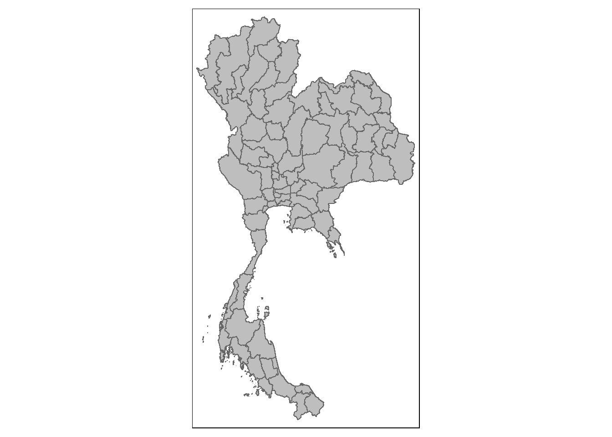
B.2 Filtering THSAB for the Bangkok Metropolitan Region
Before further analyzing the data, we will limit the scope to only consider the Bangkok Metropolitan Region or BMR. This would encompass Bangkok, Nonthaburi, Nakhon Pathom, Pathum Thani, Samut Prakan, Samut Sakhon. While it is good to get insights outside of BMR, it is out of the study scope and it is best to focus on the objectives.
The code chunk below checks if all the provinces in the BMR appear as is under the ADM1_EN column of thsab_prov
filter(thsab_prov, ADM1_EN %in% c("Bangkok", "Nonthaburi","Nakhon Pathom", "Pathum Thani", "Samut Prakan", "Samut Sakhon"))$ADM1_EN[1] "Bangkok" "Samut Prakan" "Nonthaburi" "Pathum Thani"
[5] "Nakhon Pathom" "Samut Sakhon" With the previous code returning all 6 provinces, we have confirmation that the provinces are all present and spelled as is in the data source. We create a new object bmr_boundary to contain only the provinces in BMR. We also take this opportunity to only keep the relevant columns in the dataset using the select() function of dplyr package.
bmr_boundary <- st_read(dsn="data/geospatial",
layer="tha_admbnda_adm1_rtsd_20220121") %>%
st_transform(crs = 32647) %>%
filter(ADM1_EN %in% c("Bangkok", "Nonthaburi","Nakhon Pathom", "Pathum Thani", "Samut Prakan", "Samut Sakhon")) %>% dplyr::select(Shape_Leng, Shape_Area, ADM1_EN, geometry)Reading layer `tha_admbnda_adm1_rtsd_20220121' from data source
`C:\drkrodriguez\ISSS626-GAA\Take-home\Take-home_Ex01\data\geospatial'
using driver `ESRI Shapefile'
Simple feature collection with 77 features and 16 fields
Geometry type: MULTIPOLYGON
Dimension: XY
Bounding box: xmin: 97.34336 ymin: 5.613038 xmax: 105.637 ymax: 20.46507
Geodetic CRS: WGS 84tm_shape(bmr_boundary) +
tm_polygons("grey")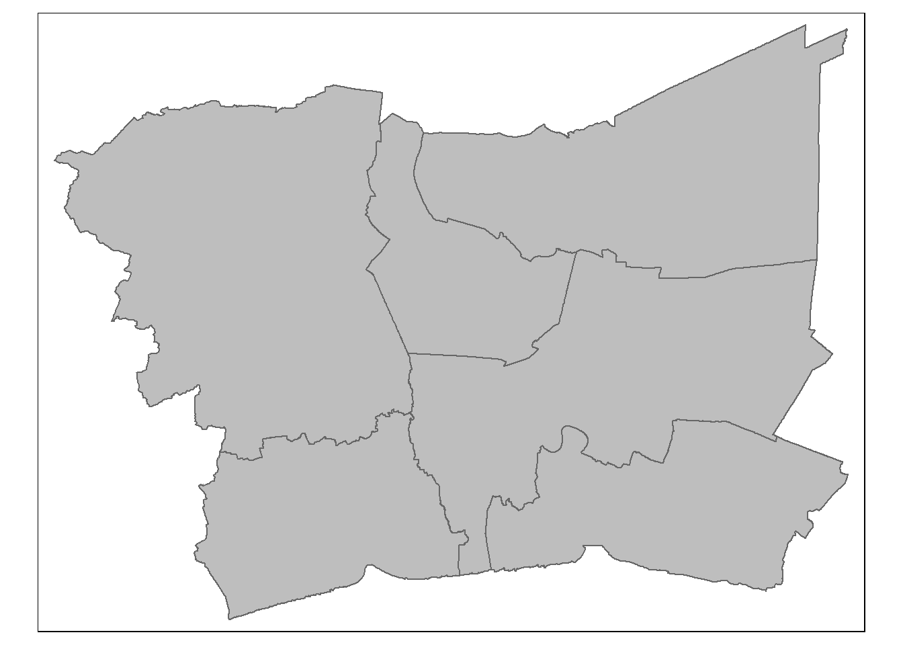
The code below creates a second object which is just a union of all the provinces. (i.e., borders between provinces are lost) This is done using the st_union() function.
bmr_full = st_union(bmr_boundary)tm_shape(bmr_full) +
tm_polygons("grey")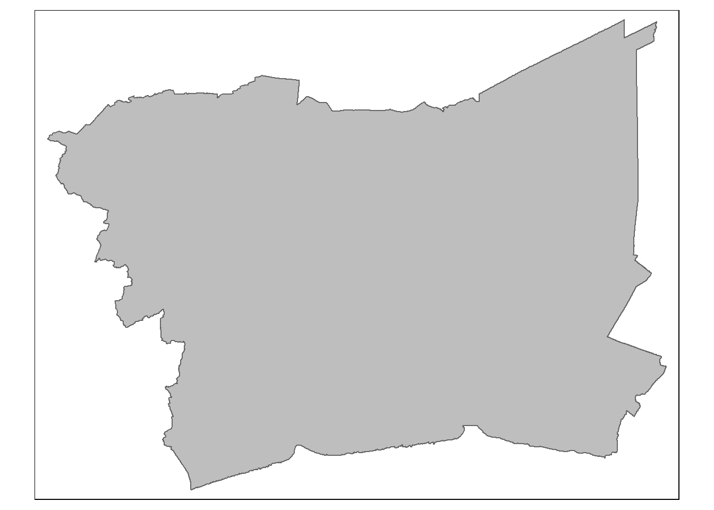
The code below keeps the final boundary objects into files to make loading more convenient for later analyses.
write_rds(bmr_boundary, "data/rds/bmr_boundary.rds")
write_rds(bmr_full, "data/rds/bmr_full.rds")The code below then reloads the same objects into R:
bmr_boundary = read_rds("data/rds/bmr_boundary.rds")
bmr_full = read_rds("data/rds/bmr_full.rds")B.3 Road Accident Data, Aspatial, csv-file
The road accident data is contained in a csv file. We use the code block in the first tab below to load it into the thra object with some necessary transformations that we identified upon inspecting the raw file. The second tab gives an explanation of the different nested functions used in the code
bmracc <- read_csv("data/aspatial/thai_road_accident_2019_2022.csv") %>%
filter(!is.na(longitude) & longitude != "",
!is.na(latitude) & latitude != "") %>%
st_as_sf(coords = c("longitude", "latitude"), crs=4326) %>%
st_transform(crs = 32647)
bmracc <- filter(bmracc, geometry %in% st_intersection(bmr_full, bmracc)) %>%
mutate(Year = year(incident_datetime)) %>%
mutate(MonthNum = month(incident_datetime)) %>%
mutate(Month = month(incident_datetime, label = TRUE, abbr = TRUE)) %>%
mutate(DayOfWeek = wday(incident_datetime, label = TRUE, abbr = TRUE))read_csv()used to import a csv file into an R objectfilter(!is.na(longitude) & longitude != "", !is.na(latitude) & latitude != "")used to exclude any records where the longitude or latitude information is missingst_as_sf(coords = c("longitude", "latitude"), crs=4326)used to convert the dataframe into an sf object using a reference system (WGS84) based on the coordinatesst_transform(crs = 32647)used to apply the correct EPSG code to the sf objectfilter(bmracc, geometry %in% st_intersection(bmr_full, bmracc))used to leave only records which fall within the BMR boundariesmutate(...)these lines are used to add additional columns to quickly reference the year, month and day of the week that each accident occured as these dimensions allow for some temporal analyses
Calling the new object shows that it has 12,989 rows across 20 fields.
bmraccWe use the code chunks below to check the data and visualize the data on the BMR boundary map.
tm_shape(bmr_boundary) +
tm_polygons(col = "grey") +
tm_shape(bmracc) +
tm_dots(col = "red", size = 0.01, alpha = 0.5)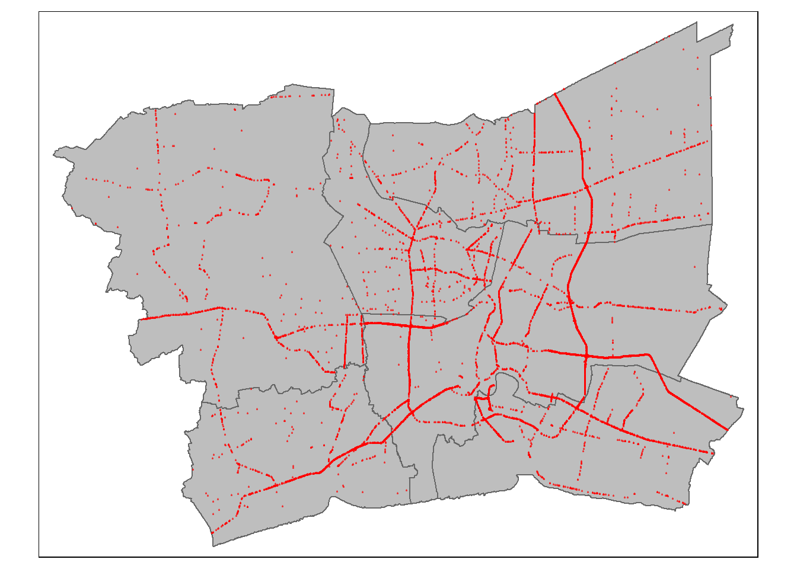
The code chunk below writes the resulting accident dataset into an rds file for convenient loading.
write_rds(bmracc, "data/rds/bmracc.rds")B.4 Thailand Roads Open StreetMap, Shapefile
The second geospatial object is the street map shapefile. We will use the object network to contain the final road network for the study.
network <- st_read(dsn="data/geospatial",
layer="hotosm_tha_roads_lines_shp")Running the above code confirms that the dataset is in multilinestring sf format and that it contains 2.8M records across 15 variables. It also shows that there is no CRS applied to the dataset.
Based on these, the following steps need to be done: apply the right CRS/EPSG code of 32647 or the same as bmr_full, and, filter the network to only include BMR.
The code below does the first step of applying a reference system and updating the EPSG code to 32647 using st_set_crs() and st_crs() from the sf package.
network <- st_read(dsn="data/geospatial",
layer="hotosm_tha_roads_lines_shp") %>%
st_make_valid() %>% st_set_crs(4326) %>% st_transform(crs = st_crs(bmr_full))The code below then finds the network within BMR by using st_intersection() to find the overlap between the full road network and the BMR boundary. We also include write_rds() in the chunk to store this object into an rds file for easy future loading.
network <- st_intersection(network, bmr_full)
write_rds(network, "data/rds/network.rds")Calling the object name allows us to inspect the contents.
networkThe size of the object has now been reduced to 585K features from the original 2.8M. This still appears a very large number if we want to visualize the data, so we need to inspect if there are any opportunities to reduce the dataset by excluding any irrelevant records.
The data includes a column named highway which gives information on the the type or classification of the road.
ggplot(network, aes(x = reorder(highway, table(highway)[highway]))) +
geom_bar() +
coord_flip() +
ggtitle("Number of Roads by Highway type") +
theme_minimal() +
geom_text(stat='count', aes(label=..count..), hjust=-0.3) +
theme(
plot.title = element_text(hjust = 0.5, size = 14, face = "bold"),
axis.title.x = element_text(size = 12),
axis.title.y = element_text(size = 12),
axis.text.x = element_blank(),
panel.grid.major = element_blank(),
panel.grid.minor = element_blank()
) +
labs(x = "Highway Type", y = "Number of Roads")The resulting chart shows that roads with highway type of residential and service make up 522K of the 585K roads in the dataset. We refer to the OpenStreetMap wiki page to see the definition of the different types of highways in the Thailand map and see that these two highway types are access roads for residences or specific buildings. For our objective, we should be able to limit to roads where accidents (are expected to frequently) happen, and only to roads that should be accessible by vehicles. Going through the definition of the highway types, we see that the following 6 types could be out of scope for our study:
residential - road within a residential area that gives public access to one or multiple residences
service - minor road that gives access to buildings or places outside a residential area (e.g., to a religious site, an attraction, part of an estate)
footway - pathways designed for pedestrian access
track - road whose only function is to provide access to surrounding land, and is most of the time unpaved
path - multi-purpose path intended for non-motor vehicles
steps
We can then use the following code chunk which uses the filter() function to remove these classifications from the current network object. We call the object name in the succeeding code chunk to check the new dataset.
bmr_network <- bmr_network %>%
filter(!(highway %in% c("residential", "service", "footway", "track", "path", "steps")))bmr_networkWhile this looks good, it looks like the object is being identified as a GEOMETRY rather than a LINESTRING object. We can use the code below to correct it.
bmr_network <- st_cast(bmr_network, "LINESTRING")bmr_networkThe new road network object is now reduced to 34K records or roads which is a 94% reduction in the number of records. We will use some visual inspection to see if this reduction in records will affect our analysis. The two code chunks below plot the road network within the boundaries, while the second plots the three objects together. We use the tmap function to create these maps.
tm_shape(bmr_full) +
tm_polygons(col = "lightgrey") +
tm_shape(bmr_network) +
tm_lines(col = "black")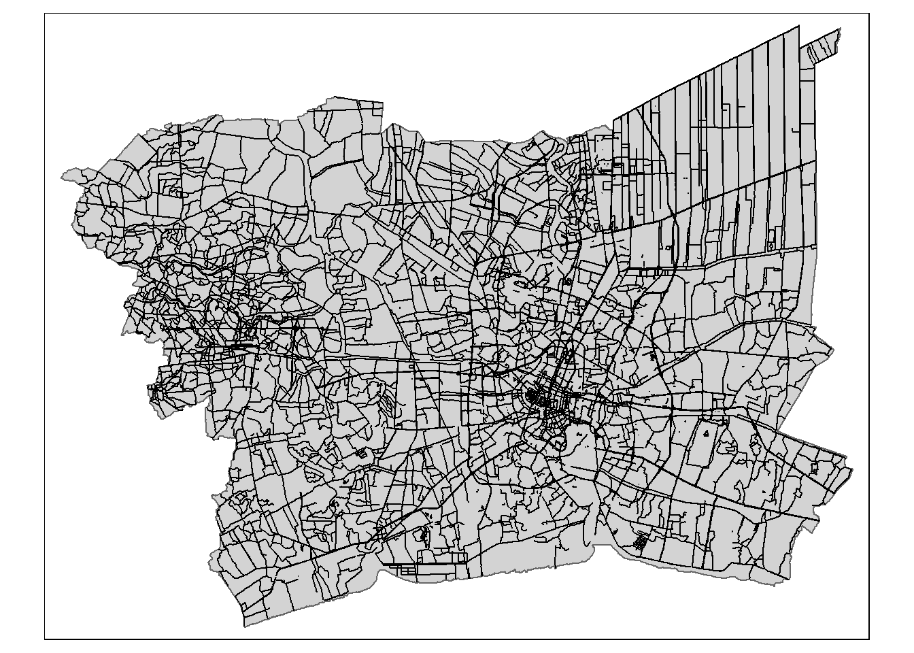
tm_shape(bmr_full) +
tm_polygons(col = "lightgrey") +
tm_shape(bmr_network) +
tm_lines(col = "black") +
tm_shape(bmracc) +
tm_dots(col = "red", alpha = 0.2)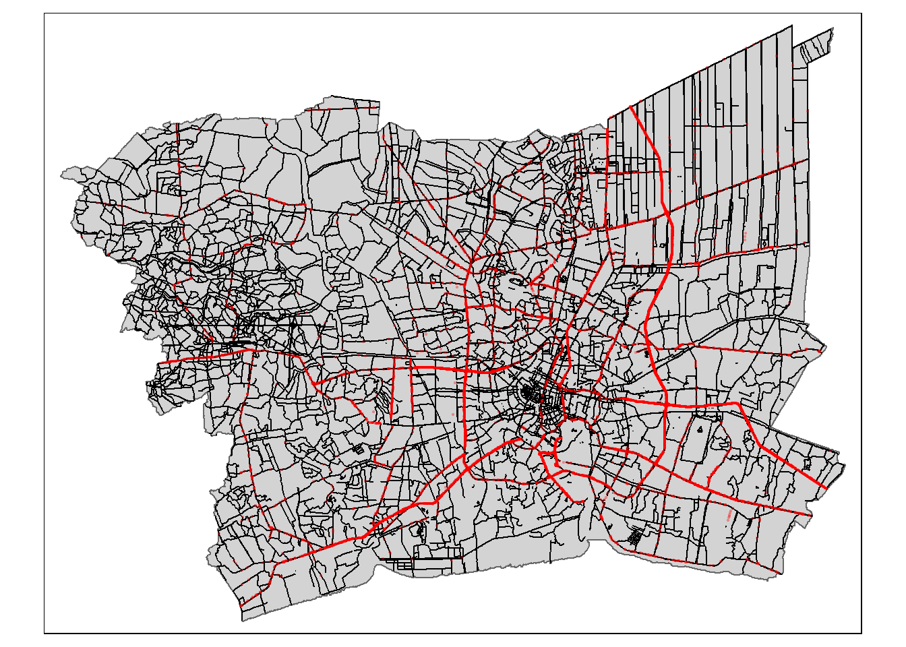
From these two maps, we see that:
while we have filtered 90% of the original records, the resulting map still appears dense, especially in some central areas; and,
the road accident locations appear to fall along the network
Based on these, we will go ahead with this version of the network for our analysis.
The following code writes the resulting network into an rds file for more convenient loading in the future.
write_rds(bmr_network, "data/rds/bmr_network.rds")B.5 Resolving duplicate points
In this section, we perform some additional transformations to perform the required analyses.
First, we check the event or accident dataset to see if there are any duplicated data points or locations as the methods require that the points are unique. The code below checks if any duplicate points exist. Note that we specify the column in the argument as we are double-checking duplicate locations rather than completely duplicate records.
any(duplicated(bmracc$geometry))[1] TRUEAs the code returned TRUE, it confirms the presence of duplicate points, we use st_jitter() from the sf package to introduce some jitter to each point and ensure that points do not lie on the same location. Without any additional arguments, the function uses a default factor 0.002 of the bounding box diagonal as the bounds for the amount of jitter introduced. In the code below, we define an amount of 0.01 instead.
bmracc_jitt <- st_jitter(bmracc, 0.01)Rerunning the check using duplicated() shows that there are no duplicate points anymore.
any(duplicated(bmracc_jitt$geometry))[1] FALSEC. NonSpatial Data Analysis
Before we go into performing spatial or spatio-temporal analysis, it would be good to explore and examine the data further. This can reveal some insights and also clarify what variables we can use for drilling down on the required analysis.
C.1 Categories of accidents
We first would like to understand the different labels we can use from the BMR road accident dataset bmracc The following columns appear to be able to give some insight about the nature of the accident:
vehicle_type
presumed_cause
accident_type
number_of_vehicles_involved
number_of_fatalities
weather_condition
We will try to be brief in analysing these variables as the main intent is to understand which ones will add the most value to the spatial analysis needed to address the main study objectives.
Note that while we use bmracc rather than the modified bmracc_jitt in the codes below, the result will be the same as we do not concern ourselves with the geometry innformation yet.
C.1.1 Vehicle Type
This variable is intended to give the type of vehicle involved in the accident. We use the code block below to understand the categories under this variable using a simple bar chart created through ggplot().
ggplot(bmracc, aes(x = reorder(vehicle_type, table(vehicle_type)[vehicle_type]))) +
geom_bar() +
coord_flip() +
ggtitle("Number of Accidents by Vehicle type") +
theme_minimal() +
geom_text(stat='count', aes(label=..count..), hjust=-0.3) +
theme(
plot.title = element_text(hjust = 0.5, size = 16, face = "bold"),
axis.title.x = element_text(size = 15),
axis.title.y = element_text(size = 12),
axis.text.y = element_text(size = 12),
axis.text.x = element_blank(),
panel.grid.major = element_blank(),
panel.grid.minor = element_blank()
) +
labs(x = "", y = "")Warning: The dot-dot notation (`..count..`) was deprecated in ggplot2 3.4.0.
ℹ Please use `after_stat(count)` instead.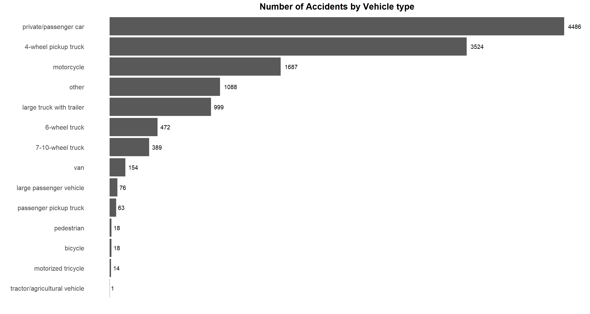
The output shows that out of 12,989 accidents, 35% are with private or passenger cars, 27% are with pickup trucks and 13% are with motorcycles. These three make up 75% of all the recorded accidents while the remaining 11 types make up the balance 25%
C.1.2 Presumed Cause
This variable is intended to give the presumed cause of the accident. We again use the code block below to understand the categories under this variable using a simple bar chart created through ggplot().
ggplot(bmracc, aes(x = reorder(presumed_cause, table(presumed_cause)[presumed_cause]))) +
geom_bar() +
coord_flip() +
ggtitle("Number of Accidents by Presumed Cause") +
theme_minimal() +
geom_text(stat='count', aes(label=..count..), hjust=-0.3) +
theme(
plot.title = element_text(hjust = 0.5, size = 16, face = "bold"),
axis.title.x = element_text(size = 15),
axis.title.y = element_text(size = 12),
axis.text.y = element_text(size = 12),
axis.text.x = element_blank(),
panel.grid.major = element_blank(),
panel.grid.minor = element_blank()
) +
labs(x = "", y = "")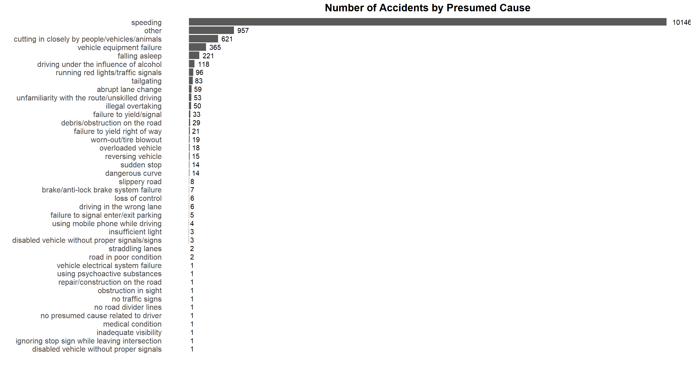
The chart shows that 10,146 or 75% of the accidents are presumed to be caused by speeding. The next largest named presumed cause only accounts for 5% of the overall data.
C.1.3 Accident Type
This variable is intended to give the type or nature of the accident. We again use the code block below to understand the categories under this variable using a simple bar chart created through ggplot().
ggplot(bmracc, aes(x = reorder(accident_type, table(accident_type)[accident_type]))) +
geom_bar() +
coord_flip() +
ggtitle("Number of Accidents by Type") +
theme_minimal() +
geom_text(stat='count', aes(label=..count..), hjust=-0.3) +
theme(
plot.title = element_text(hjust = 0.5, size = 16, face = "bold"),
axis.title.x = element_text(size = 15),
axis.title.y = element_text(size = 12),
axis.text.y = element_text(size = 12),
axis.text.x = element_blank(),
panel.grid.major = element_blank(),
panel.grid.minor = element_blank()
) +
labs(x = "", y = "")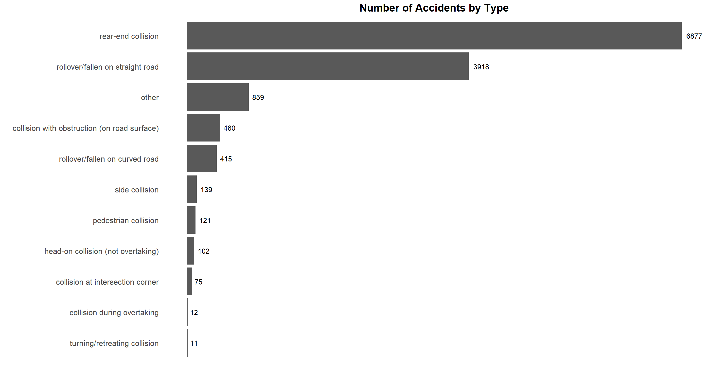
The chart shows that “rear-end collisions” and “rollover/fallen on straight road” are the leading causes recorded and account for 83% of the accidents.
C.1.4 Number of Fatalities
This variable is intended to give the number of fatalities resulting from the accident. We again use the code block below to understand the categories under this variable using a simple histogram created through ggplot().
ggplot(bmracc, aes(x = number_of_fatalities)) +
geom_histogram(binwidth = 1, color = "black", fill = "darkgrey") +
scale_x_continuous(breaks = seq(min(bmracc$number_of_fatalities), max(bmracc$number_of_fatalities), by = 1)) +
labs(title = "Accidents by Number of Fatalities", x = "Number of Fatalities", y = "Number of Accidents") +
theme_minimal() +
theme(panel.grid = element_blank()) +
geom_text(stat='count', aes(label=..count..), vjust=-0.5)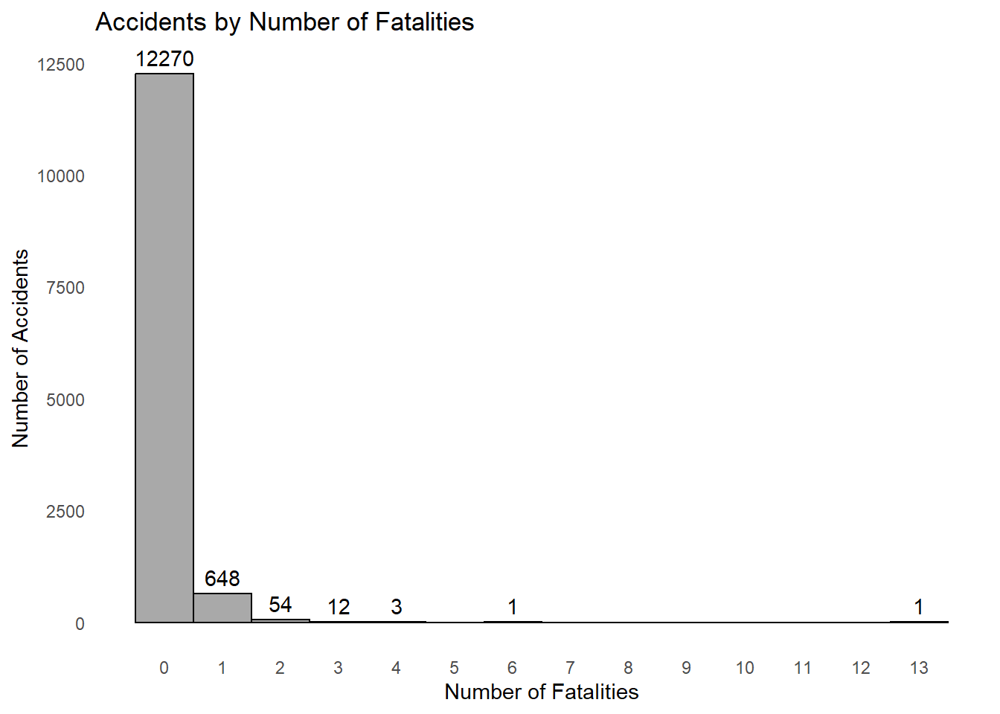
The plot shows that 94% of the recorded accidents are non-fatal. Only 719 were fatal. Although this is a small number, it might be worth looking at the location of such fatal accidents later. We can use the code below to introduce a new column fatal into the data for more convenient filtering later.
bmracc$fatal <- bmracc$number_of_fatalities > 0C.1.5 Weather Condition
This variable is intended to indicate the weather condition when the accident was recorded. We first use the code block below to understand the categories under this variable using a simple bar chart created through ggplot().
ggplot(bmracc, aes(x = reorder(weather_condition, table(weather_condition)[weather_condition]))) +
geom_bar() +
coord_flip() +
ggtitle("Number of Accidents by Weather Condition") +
theme_minimal() +
geom_text(stat='count', aes(label=..count..), hjust=-0.3) +
theme(
plot.title = element_text(hjust = 0.5, size = 16, face = "bold"),
axis.title.x = element_text(size = 15),
axis.title.y = element_text(size = 12),
axis.text.y = element_text(size = 12),
axis.text.x = element_blank(),
panel.grid.major = element_blank(),
panel.grid.minor = element_blank()
) +
labs(x = "", y = "")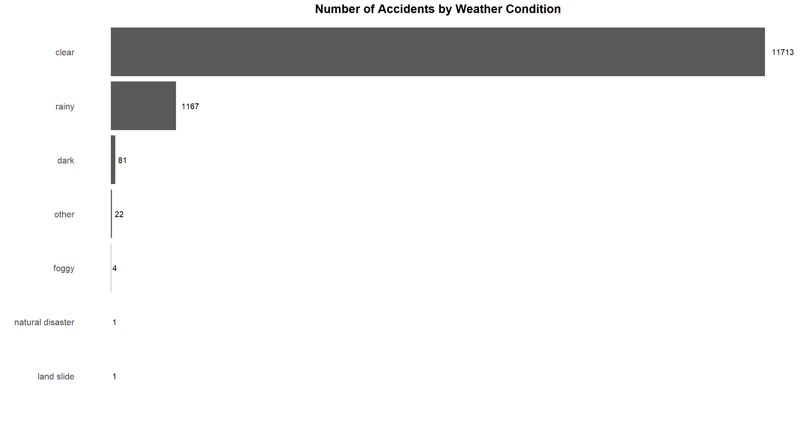
The chart shows that 90% of the accidents occurred during “clear” weather. Online sources suggest that Bangkok experieces a long rainy season and has 153 rainy days per year, so 10% for the occurrence of accidents appears low. The sources also say that the wettest month is September.
We can use the code chunk below to plot the number of accidents that were not recorded on clear weather (i.e., rainy) by month.
ggplot(filter(bmracc, !weather_condition == "clear"), aes(x = reorder(Month, table(Month)[Month]))) +
geom_bar() +
coord_flip() +
ggtitle("Number of Accidents by Month during Non-clear Weather") +
theme_minimal() +
geom_text(stat='count', aes(label=..count..), hjust=-0.3) +
theme(
plot.title = element_text(hjust = 0.5, size = 16, face = "bold"),
axis.title.x = element_text(size = 15),
axis.title.y = element_text(size = 12),
axis.text.y = element_text(size = 12),
axis.text.x = element_blank(),
panel.grid.major = element_blank(),
panel.grid.minor = element_blank()
) +
labs(x = "", y = "")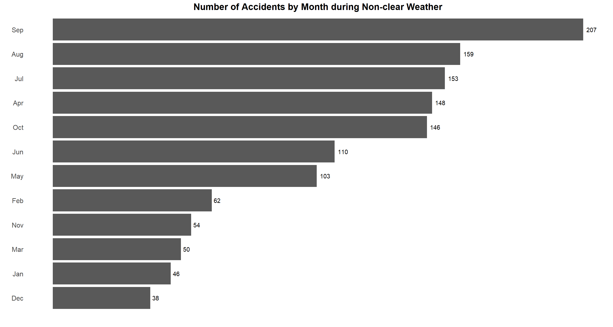
The plot does align with the expectation that September is the wettest month. The very low number of accidents during rainy weather is still questionable though so we will watch out for this if we will use this variable later.
D. Non-Network-Constrained Visualization
While we know that road accidents will only happen along the network / roads, we can still use regular spatial point pattern analysis to get some insights. We will limit this to the highest level as we just want to have some high level insights and want to spend more time working with the network constrained analysis.
We will also limit this to visualizing the KDE as we know that testing for CSR without considering the constraint of the network is inappropriate for our case.
D.1. Converting Objects into spatstat’s formats
The events need to be converted into spatstat’s ppp object using as.ppp()
bmracc_ppp <- as.ppp(st_geometry(bmracc_jitt))We then prepare an owin object to define the boundaries using the as.owin() function.
bmr_owin <- as.owin(bmr_full)D.2 KDE for all Accidents
We first combine the accidents (all years, all types) into the owin using the following code chunk
bmracc_for_kde = bmracc_ppp[bmr_owin]
bmracc_for_kde <- rescale.ppp(bmracc_for_kde, 1000, "km")We can then compute for the kde using the density() function. We use the four common methods for automatic bandwidth selection and examine them in a grid using the code chunk below.
par(mfrow=c(2,2))
plot(density(bmracc_for_kde, sigma=bw.diggle,
edge=TRUE,kernel="gaussian"), main = "KDE using Diggle Method")
plot(density(bmracc_for_kde, sigma=bw.scott(X = bmracc_for_kde),
edge=TRUE,kernel="gaussian"), main = "KDE using Scott's Rule")
plot(density(bmracc_for_kde, sigma=bw.CvL(X = bmracc_for_kde),
edge=TRUE,kernel="gaussian"), main = "KDE using Cronie & Van Lieshout Criterion")
plot(density(bmracc_for_kde, sigma=bw.ppl(X = bmracc_for_kde),
edge=TRUE,kernel="gaussian"), main = "KDE using Likelihood Cross Validation")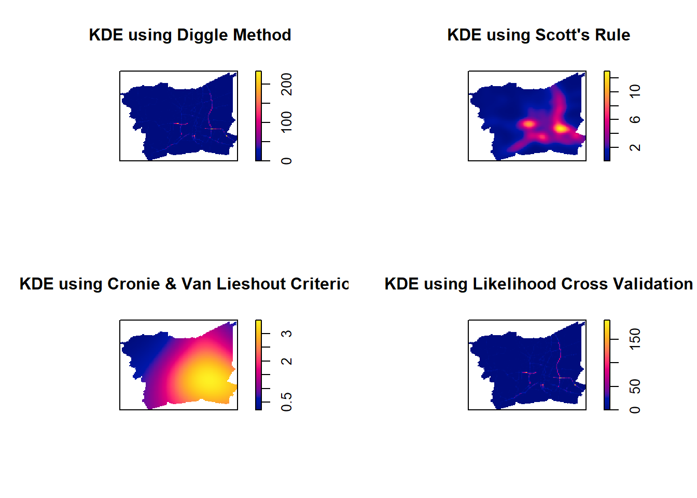
Among the four methods, it looks like Scott’s rule (using sigma=bw.scott()) is identifying hot spots unlike the others. There is a hotspot in the southwest and southeast of Bangkok. There also appears to be a high density strip (or maybe a major highway) stretching up northwards.
We will use this bandwidth selection method for our succeeding analysis.
D.3 KDE for accidents across years
We then want to see if the hotspots move across the years. To do this, we effectively need to compute for the kde across years and see if there are any visible signs of shifts in the hotspots.
First, let us try to understand the distribution of accidents by year. This will help us understand if the numberical values of the density will move because of change in the absolute number of accidents.
We use ggplot() in the code chunk below to achieve this.
ggplot(bmracc, aes(x = reorder(Year, table(Year)[Year]))) +
geom_bar() +
ggtitle("Number of Accidents by Year") +
theme_minimal() +
geom_text(stat='count', aes(label=..count..), vjust = +2) +
theme(
plot.title = element_text(hjust = 0.5, size = 16, face = "bold"),
axis.title.x = element_text(size = 15),
axis.title.y = element_text(size = 12),
axis.text.y = element_blank(),
axis.text.x = element_text(size = 12),
panel.grid.major = element_blank(),
panel.grid.minor = element_blank()
) +
labs(x = "", y = "")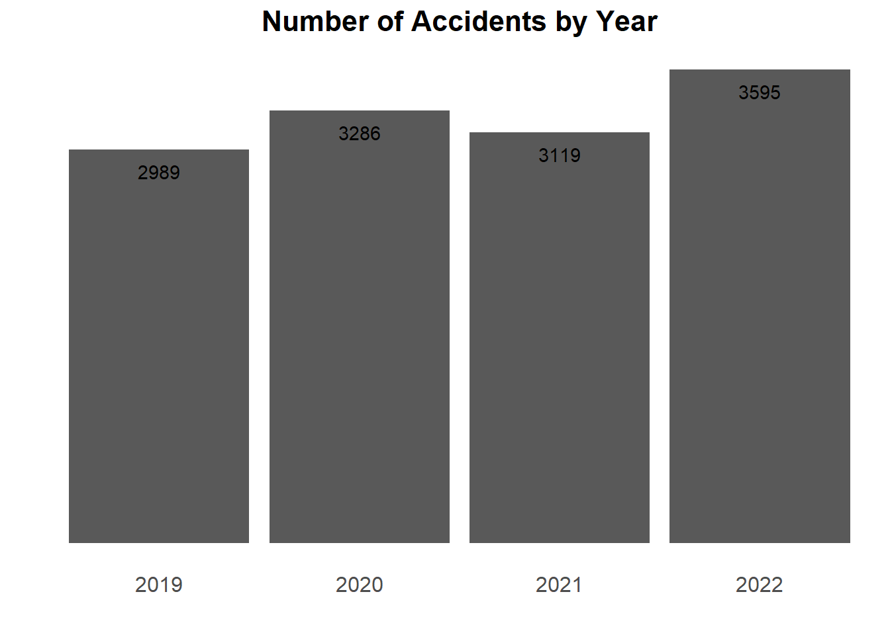
The chart shows that there were significantly more accidents in 2022 compared to the previous years. The other years are within 10% of each other. We should expect that 2022 KDE may have higher numerical values compared to the other years.
We can then use the following code to generate four different kde’s, one for each year.
par(mfrow=c(2,2))
for (i in c(2019, 2020, 2021, 2022)) {
bmracc_ppp <- as.ppp(st_geometry(filter(bmracc_jitt, Year == i)))
bmracc_for_kde = bmracc_ppp[bmr_owin]
bmracc_for_kde <- rescale.ppp(bmracc_for_kde, 1000, "km")
plot(density(bmracc_for_kde, sigma=bw.scott(X = bmracc_for_kde),
edge=TRUE,kernel="gaussian"), main = paste("KDE for year",i))
}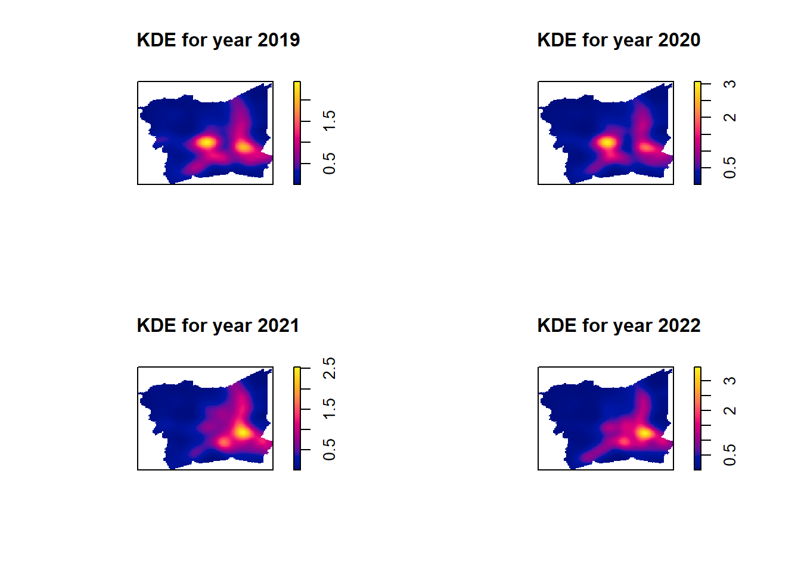
We see that there appears to be a shift between 2020 and 2021. Before 2020, there appeared to be two separate promininet hotspots for accidents– in the central and southeastern portion of the region. However, after 2020, it seems that the accidents are more frequent in the southeastern part, and in a much wider area.
D.3 KDE across Months
We can apply a similar approach of analysing by month using the code chunk below. For now, we are aggregating accidents by month across all years, so the insights will apply to the whole period and not any particular year.
par(mfrow=c(3,4))
for (i in 1:12) {
bmracc_ppp <- as.ppp(st_geometry(filter(bmracc_jitt, MonthNum == i)))
bmracc_for_kde = bmracc_ppp[bmr_owin]
bmracc_for_kde <- rescale.ppp(bmracc_for_kde, 1000, "km")
plot(density(bmracc_for_kde, sigma=bw.scott(X = bmracc_for_kde),
edge=TRUE,kernel="gaussian"), main = paste("KDE for month",i))
}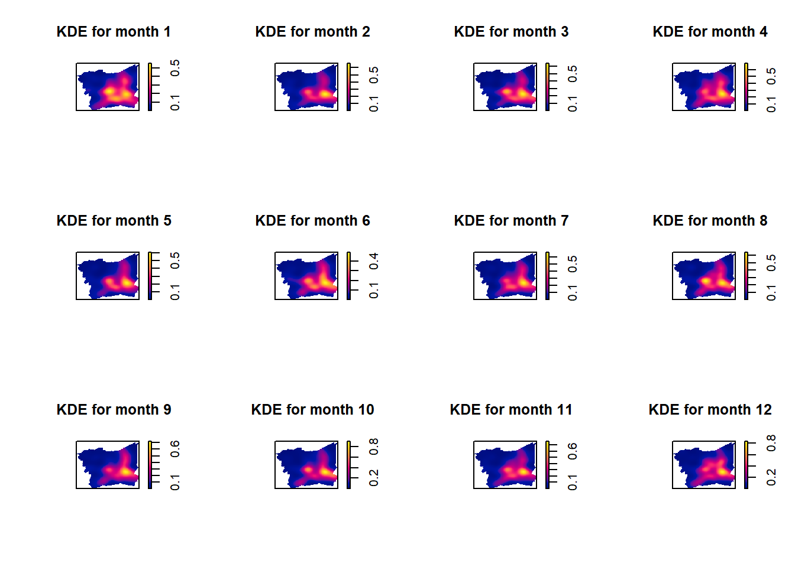
The output reveals no drastic shift in hotspots (using kde) across months. There are months where the intensities and relative intensities differ, but it appears like the hotspots remain in the same areas.
D.4 KDE for Clear vs “Rainy” Days
The final analysis we want to perform before moving to network-constrained analysis is on clear vs non-clear days. This is indicated in the field called weather_condition in the accident dataset.
To produce the kde visualization, we can use the code chunk below.
par(mfrow=c(1,2))
bmracc_ppp <- as.ppp(st_geometry(filter(bmracc_jitt, weather_condition == "clear")))
bmracc_for_kde = bmracc_ppp[bmr_owin]
bmracc_for_kde <- rescale.ppp(bmracc_for_kde, 1000, "km")
plot(density(bmracc_for_kde, sigma=bw.scott(X = bmracc_for_kde),
edge=TRUE,kernel="gaussian"), main = "KDE for Clear Days")
bmracc_ppp <- as.ppp(st_geometry(filter(bmracc_jitt, !(weather_condition == "clear"))))
bmracc_for_kde = bmracc_ppp[bmr_owin]
bmracc_for_kde <- rescale.ppp(bmracc_for_kde, 1000, "km")
plot(density(bmracc_for_kde, sigma=bw.scott(X = bmracc_for_kde),
edge=TRUE,kernel="gaussian"), main = "KDE for Rainy Days")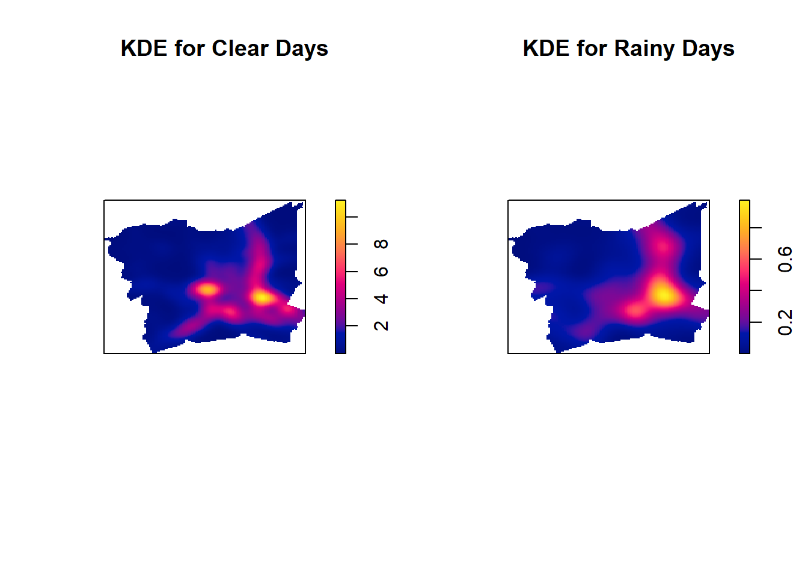
The output are very similar too some of the charts generated earlier. The hotspot in the center of BMR appears to dissipate during rainy days. (relative to the one in the southeast portion of the region.
E. Network Constrained Visualizations and Analyses
In this section, we visualize the locations of accidents using different dimensions, especially based on time, and recognizing the constraint of the network for our particular problem. As such, we will be performing network-constrained methods from this point.
E.1 Preparation of Data for Network Constrained Analysis
Before we are able to perform network-constrained NKDE, we first need to define sample points along the road network, and to do that, we can use the midpoint of the lixels of the network.
E.1.1 Preparing the lixels
To lixelize a network, the minimum and (maximum) length of lixels need to be defined. A logical distance needs to be chosen for a given study. In our case, we might no have enough information to understand what road segment length is relevant to group accidents into. However, we can start with understanding the road lengths in the network.
We can use the code block below to show the distribution of the road length values using summary() to give the quartiles, and quantile() to give a wider range of view.
summary(st_length(bmr_network)) Min. 1st Qu. Median Mean 3rd Qu. Max.
0.143 31.581 124.691 413.002 433.312 24745.584 quantile(st_length(bmr_network), probs = seq(.1, .9, by = .1))Units: [m]
10% 20% 30% 40% 50% 60% 70%
13.78247 24.36581 41.45909 71.64269 124.69070 207.11305 337.56988
80% 90%
556.85935 1074.26696 The output shows that there is a very wide range of values. There is also a surprisingly large number of roads (>40%) that are less than 100m– which seem to be too short for typical roads. We can first choose a min distance of 200m which would allow for at least 40% of roads to not be split. As for the maximum length, let us first set it to 600m so only a little over 20% of the roads will be split into smaller segments.
We implement this using lixelize_lines() in the code chunk below.
lixels <- lixelize_lines(bmr_network$geometry,
600,
mindist = 200)E.1.2 Generating sample points
The next step is to define sample points along the network which will be the points where the KDE function will be computed on.
We can create sample points on the lixel centers using lines_center() in the code below.
samples <- lines_center(lixels) E.2 All Years, All Accidents, Initial Analysis
Let’s start by looking at the highest levels. We can compute for the nkde for all accidents in the dataset (2019-2022) using the code chunk below. This uses the accidents with the jitter applied.This code uses a bandwidth of 300m, anduses “quartic” for the kernel function, and uses simple calculation method for the KDE
densities <- nkde(bmr_network,
events = bmracc_jitt,
w = rep(1, nrow(bmracc_jitt)),
samples = samples,
kernel_name = "quartic",
bw = 300,
div= "bw",
method = "simple",
digits = 1,
tol = 1,
grid_shape = c(10,10),
max_depth = 8,
agg = 5,
sparse = TRUE,
verbose = FALSE)We import the densities into the lixel and sample object using the code below. We use a multiple of 1000 to convert the figures from accidents per square meter to accidents per square kilometer
samples$density_all <- densities*1000000
lixels$density_all <- densities*1000000We use the code below to produce a map with just the calculated densities.
tm_shape(bmr_boundary)+
tm_polygons(col = "lightblue", border.col = "black", lwd = 0.5)+
tm_shape(lixels)+
tm_lines(col="density_all", palette = "-inferno", lwd = 1, title.col = "Per sq km") +
tm_layout(title = "BMR Road Accident Density - 2019-2022",
title.position = c("left", "top"),
legend.position = c("left", "bottom"),
bg.color = "grey90")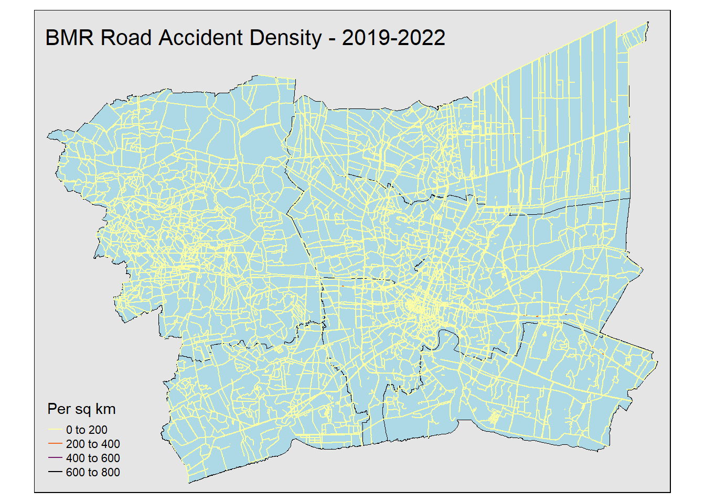
The resulting map surprisingly does not show a lot of high density road segments, which is not aligned to the earlier map with the locations of the accidents. We can check if the jitter has caused displacement of the locations and hidden high density road segments by rerunning the below code chunk which uses the accident locations without jitter applied.
densities <- nkde(bmr_network,
events = bmracc,
w = rep(1, nrow(bmracc)),
samples = samples,
kernel_name = "quartic",
bw = 300,
div= "bw",
method = "simple",
digits = 1,
tol = 1,
grid_shape = c(10,10),
max_depth = 8,
agg = 5,
sparse = TRUE,
verbose = FALSE)To see if using the original event points will address our concern, we repeat the code chunk below to create a static map.
samples$density_all <- densities*1000000
lixels$density_all <- densities*1000000
tm_shape(bmr_boundary)+
tm_polygons(col = "lightblue", border.col = "black", lwd = 0.5)+
tm_shape(lixels)+
tm_lines(col="density_all", palette = "-inferno", lwd = 1, title.col = "Per sq km") +
tm_layout(title = "BMR Road Accident Density - 2019-2022",
title.position = c("left", "top"),
legend.position = c("left", "bottom"),
bg.color = "grey90")It looks like the use of the original accident data does little to reveal dense locations. If we examine the interactive map and zoom in, we see one possible reason for the problem. Major roads are being split into multiple semi-parallel roads. These might denote different directions on the same highway, service roads, etc. These might cause accidents on the same “parent” road to be split across their parts.
We try to solve this problem by recreating our network while merging such roads into one.
E.3 Transformation step - merging of parallel roads
One way to merge the roads, is to first use st_buffer() to create a width dimension on the roads. We would prefer to use the actual width of the roads, plus the islands here, but there is no way to do this accurately and this would vary from road to road. (e.g., some roads could have one lane, while others could have four or more lanes) For our case, we will use a width of 2 x 15m, which is based on a ~3m lane width estimate, which means we are buffering up to the width of five lanes or five cars on each side.
We use the code chunk below to produce a buffered network.
bmr_network_buffered <- st_buffer(bmr_network, dist = 15)
bmr_network_dissolved <- st_union(bmr_network_buffered)The next step is to convert or cast this into a linestring object, but before that we would want to make sure that the geometries are simple enough so the casting is executed properly. To do this, we fist use st_simplify() which simplifies objects by reducing vertices.
bmr_network_simplified <- st_simplify(bmr_network_dissolved, dTolerance = 1)With the network simplified, we can then use st_cast() to convert the geometries back into linestrings. Note that we use two calls since we cannot cast polygons directly into linestrings.
bmr_network_v2 <- st_cast(bmr_network_simplified, "MULTILINESTRING")
bmr_network_v2 <- st_cast(bmr_network_v2, "LINESTRING")Note that the resulting object was a list rather than a dataframe, we can use st_as_sf() to ensure that it is in an sf dataframe format.
bmr_network_v2 <- st_as_sf(bmr_network_v2)We can examine the original and new network side by side using tmap_arrange() in the code below to see that the new network has worked sufficiently.
orig_network <- tm_shape(bmr_full) +
tm_polygons(col = "lightgrey") +
tm_shape(bmr_network) +
tm_lines(col = "black") +
tm_layout(title = "Original Road Network")
new_network <- tm_shape(bmr_full) +
tm_polygons(col = "lightgrey") +
tm_shape(bmr_network_v2) +
tm_lines(col = "black")+
tm_layout(title = "Simplified Road Network")
tmap_arrange(orig_network, new_network, asp=1, ncol=2)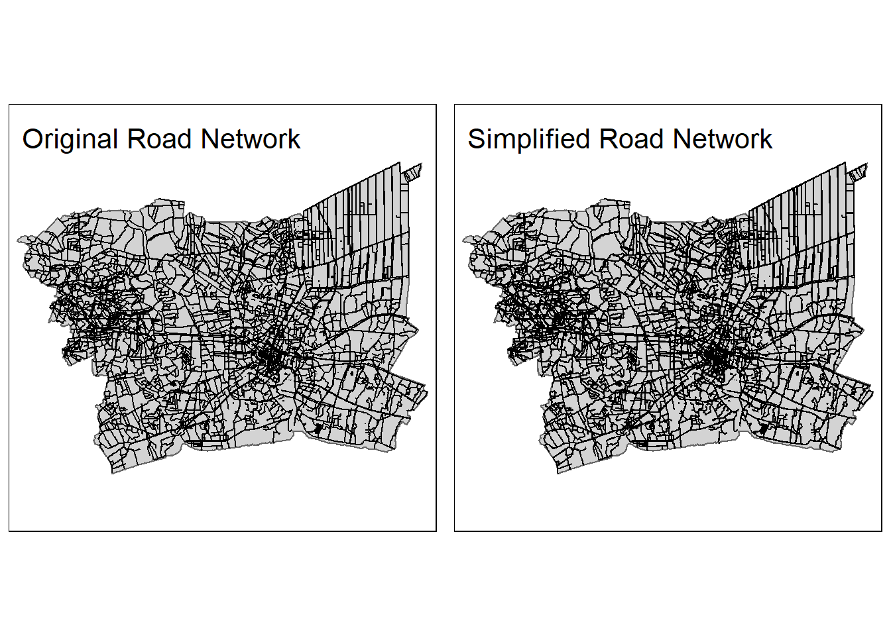
The transformation seems to have worked, and we see by counting the objects using length() st_geometry() in the code below, that the number of roads has been reduced dramatically from 34K to 4.2K– even with the very similar high level map.
length(st_geometry(bmr_network))[1] 34056length(st_geometry(bmr_network_v2))[1] 4162Let us examine the road lengths in the updated network using summary() and quantile() in the code chunk below.
summary(st_length(bmr_network_v2)) Min. 1st Qu. Median Mean 3rd Qu. Max.
4.0 326.1 1935.9 4529.2 5826.1 1263640.1 quantile(st_length(bmr_network_v2), probs = seq(.1, .9, by = .1))Units: [m]
10% 20% 30% 40% 50% 60% 70%
111.8646 236.2789 474.0794 1023.5185 1935.9245 3231.7745 4846.3553
80% 90%
7074.5520 10733.3337 The simplified network now has longer road segments with the median being close to 2km in length.
We can then repeat the preparation of data from the creation of the lixels to the creation of the sample points. we will use exactly a similar code using lixelize_lines() as in the earlier sections. Given the distribution of the lengths, we decide to use longer lixel lengths with this new network. We choose 1km and 2km for the parameters.
lixels_v2 <- lixelize_lines(st_geometry(bmr_network_v2),
2000,
mindist = 1000)
samples_v2 <- lines_center(lixels_v2) Before we move, let us remove the intermediate objects from memory using rm()
rm(bmr_network_buffered)Warning in rm(bmr_network_buffered): object 'bmr_network_buffered' not foundrm(bmr_network_dissolved)Warning in rm(bmr_network_dissolved): object 'bmr_network_dissolved' not foundrm(bmr_network_simplified)Warning in rm(bmr_network_simplified): object 'bmr_network_simplified' not
foundE.4 Distribution of All Accidents, Initial Analysis
We now rerun the highest level KDE with the updated network to see if we are getting more insightful output.
We rerun nkde() to compute the network constrained KDE on the new network and using the new sample points.
densities <- nkde(bmr_network_v2,
events = bmracc,
w = rep(1, nrow(bmracc)),
samples = samples_v2,
kernel_name = "quartic",
bw = 500,
div= "bw",
method = "simple",
digits = 1,
tol = 1,
grid_shape = c(10,10),
max_depth = 2,
agg = 5,
sparse = TRUE,
verbose = FALSE)We again transfer these densities into the lixels and sample dataframes using the code chunk below
samples_v2$density_all <- densities*1000000
lixels_v2$density_all <- densities*1000000Next, we can create a static map to show the computed KDEs visually using tmap package in the code chunk below.
tm_shape(bmr_boundary)+
tm_polygons(col = "lightblue", border.col = "black", lwd = 0.5)+
tm_shape(lixels_v2)+
tm_lines(col="density_all", palette = "-inferno", lwd = 1, title.col = "Per sq km") +
tm_layout(title = "BMR Road Accident Density - 2019-2022",
title.position = c("left", "top"),
legend.position = c("left", "bottom"),
bg.color = "grey90")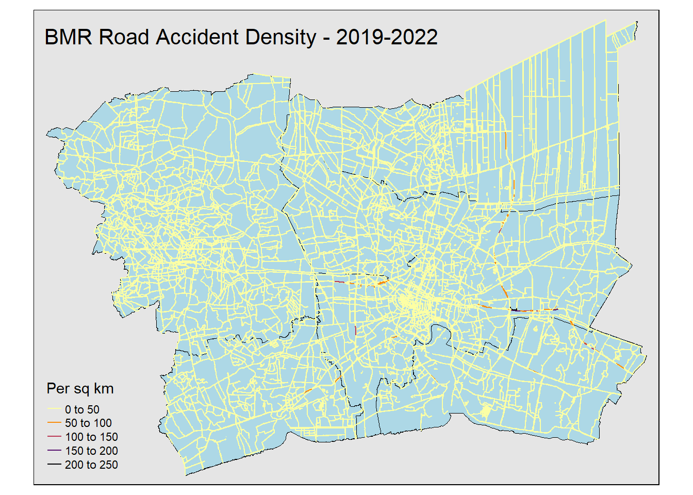
While the network is simplified, it looks like we still get a very homoegenous, yellow chart. This might be due to the bottom-most bin including zeros. We can inspect the number of zeros and the range of the nonzero kde’s using summary() in the code chunk below.
print("Distribution of all Densities")[1] "Distribution of all Densities"summary(lixels_v2$density_all) Min. 1st Qu. Median Mean 3rd Qu. Max.
0.000 0.000 0.000 1.623 0.000 214.461 print("Distribution of non-zero Densities")[1] "Distribution of non-zero Densities"summary(filter(lixels_v2, density_all > 0)$density_all) Min. 1st Qu. Median Mean 3rd Qu. Max.
0.00004 2.83624 4.71730 11.10733 11.22094 214.46127 It looks like non-zero vlues are sparse. Less than 25% of the lixles have non-zero values. We can either use a custom palette or add a layer to grey out the zero denisty lixels. We use the latter in the code chunk below. We also add some additional elements like the provinces, and modify the formatting, in order to make the chart more information-rich and readable.
tm_shape(bmr_boundary)+
tm_polygons(col = "ADM1_EN", palette = "Blues", border.col = "black", lwd = 0.5, title = "Province")+
tm_shape(lixels_v2)+
tm_lines(col="density_all", palette = "-inferno", lwd = 2, title.col = "Per sq km") +
tm_shape(filter(lixels_v2, density_all == 0)) +
tm_lines(col="grey", lwd = 2) +
tm_layout(title = "BMR Road Accident Density - 2019-2022",
title.position = c("left", "top"),
legend.position = c("left", "bottom"),
bg.color = "grey90")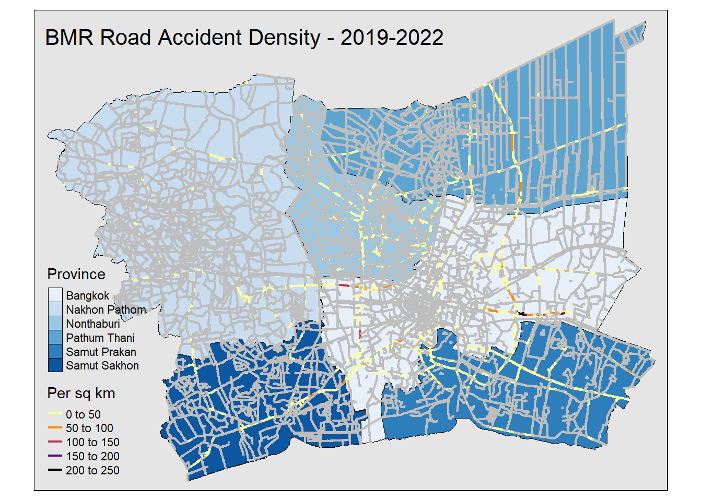
The plot now shows clear road segments where there is higher density. It reveals the most dense segments lie within Bangkok. Pathum Thani and Samut Sakhon also show some high density segments. Meanwhile, Nakohn Pathom appears to have the least accident dense road segments.
E.5 Distribution of Accidents by Year
We then look into the distribution of accidents across years to see if there is a change or shift that has occured. To do this, we need to generate the nkde for each year using the code below. The code writes a new column for the lixels and the samples dataframes for each year’s KDE values.
for (i in 2019:2022) {
densities <- nkde(bmr_network_v2,
events = filter(bmracc, Year == i),
w = rep(1, nrow(filter(bmracc, Year == i))),
samples = samples_v2,
kernel_name = "quartic",
bw = 500,
div= "bw",
method = "simple",
digits = 1,
tol = 1,
grid_shape = c(10,10),
max_depth = 2,
agg = 5,
sparse = TRUE,
verbose = FALSE)
lixels_v2[[paste("density_",as.character(i),sep="")]] <- densities * 100000
samples_v2[[paste("density_",as.character(i),sep="")]] <- densities * 100000
}We can then use the code block below to generate the map of the four different years using tmap package.
columns_to_map <- c("density_2019", "density_2020", "density_2021", "density_2022")
yearly = list()
for (col in columns_to_map)
{
yearly[[col]] <- tm_shape(bmr_boundary)+
tm_polygons(col = "lightblue", border.col = "black", lwd = 0.5)+
tm_shape(lixels_v2)+
tm_lines(col=col, palette = "-inferno", lwd = 1, title.col = "Per sq km") +
tm_shape(lixels_v2[lixels_v2[[col]] == 0, ]) +
tm_lines(col="grey", lwd = 2) +
tm_layout(title = paste("Year -",substr(col,9,12)),
title.position = c("left", "top"),
legend.position = c("left", "bottom"),
bg.color = "grey90")
}tmap_arrange(yearly[[1]], yearly[[2]], yearly[[3]], yearly[[4]], ncol = 2)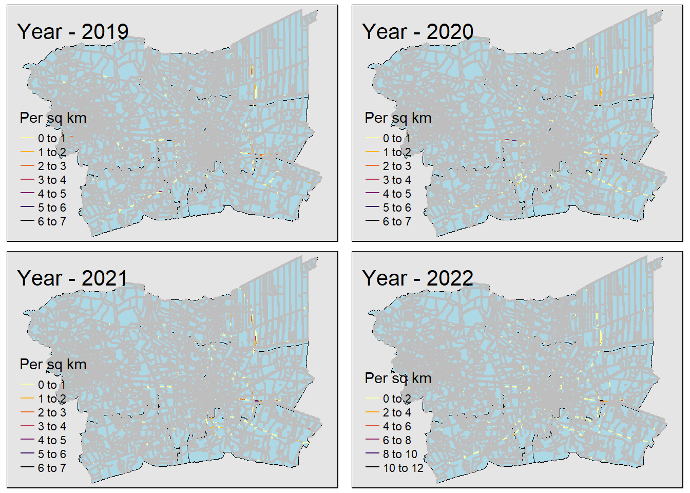
The output shows no significant change in the location of the hotspots across years. Before we look at another dimension, let us try to test for complete spatial randomness on the most recent year.
E.6 Test for CSR - 2022 Accidents
It clearly looks like accidents are not randomly or homogeneously distributed in the network. We can verify this using tests for CSR (Complete Spatial Randomness) using the K- or G-functions.
For our CSR test, the test hypotheses will be:
\(H_0\) - Road accidents in 2022 are randomly distributed along the BMR road network
\(H_1\) - Road accidents in 2022 are not randomly distributed along the BMR road network
The code chunk below runs these two functions for testing CSR using kfunctions() from the spNetwork package. We specify a range of 0m (start) and 2km (end) to evaluate the function. We also specify 50 Monte Carlo simulations (nsim + 1) to draw the envelope. A confidence interval (1 - conf_int) of 95%, and intervals of 200m for the steps and the donut width. We also use an agg argument to allow consolidation of events. (as the function cannot work with duplicate points)
kfun_bmracc <- kfunctions(bmr_network_v2,
filter(bmracc_jitt, Year == 2022),
start = 0,
end = 2000,
step = 200,
width = 200,
nsim = 49,
resolution = 50,
verbose = FALSE,
conf_int = 0.05,
agg = 100)We can output the K-function by calling on the plotk field, and the G-function by calling on the plotg field of the resulting object
kfun_bmracc$plotg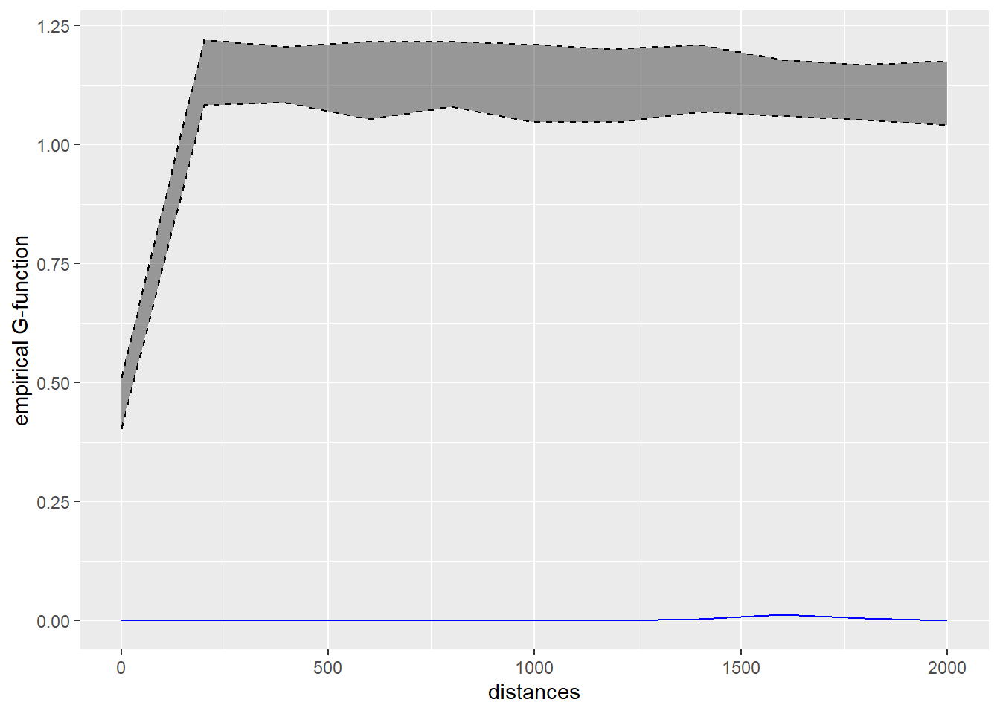
kfun_bmracc$plotk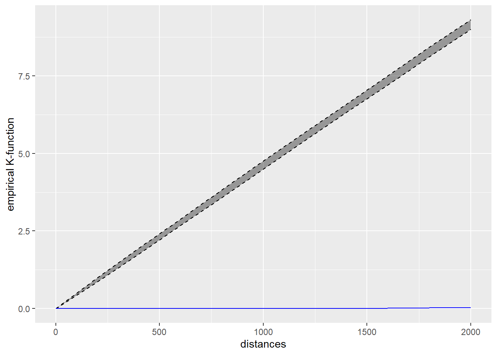
The envelop depicts a 95% confidence level CSR interval for each function. Both functions do not support th hypothesis of CSR except for very short intervals. (where the blue lines fall within the envelope) The K-function supports the view on clustering from a distance of around 300m-1.9km, while the G-function supports this from around 250-650m. The G-function supports a view on regular distribution beyond 750m. While these differ in the details, both tests do not support CSR for the distribution of accidents in 2022.
E.5 Distribution of Accidents by Month
We can then look into the distribution of accidents across months. Seasonal events including holidays, climate, etc can be linked to the months, so it is good to see if there are months that deviate from most of the others.
To do this, we need to generate the nkde for each month similar to the approach for the yearly analysis.
for (i in 1:12) {
densities <- nkde(bmr_network_v2,
events = filter(bmracc, MonthNum == i),
w = rep(1, nrow(filter(bmracc, MonthNum == i))),
samples = samples_v2,
kernel_name = "quartic",
bw = 500,
div= "bw",
method = "simple",
digits = 1,
tol = 1,
grid_shape = c(10,10),
max_depth = 2,
agg = 5,
sparse = TRUE,
verbose = FALSE)
if (i > 9){
lixels_v2[[paste("density_M",as.character(i),sep="")]] <- densities * 100000
samples_v2[[paste("density_M",as.character(i),sep="")]] <- densities * 100000
}
else{
lixels_v2[[paste("density_M0",as.character(i),sep="")]] <- densities * 100000
samples_v2[[paste("density_M0",as.character(i),sep="")]] <- densities * 100000
}
}We can then use the code block below to generate the map of the different months using tmap package.
columns_to_map <- c("density_M01", "density_M02", "density_M03",
"density_M04","density_M05","density_M06",
"density_M07", "density_M08", "density_M09",
"density_M10","density_M11","density_M12")
monthly = list()
for (col in columns_to_map)
{
monthly[[col]] <- tm_shape(bmr_boundary)+
tm_polygons(col = "lightblue", border.col = "black", lwd = 0.5)+
tm_shape(lixels_v2)+
tm_lines(col=col, palette = "-inferno", lwd = 1, title.col = "Per sq km") +
tm_shape(lixels_v2[lixels_v2[[col]] == 0, ]) +
tm_lines(col="grey", lwd = 2) +
tm_layout(title = paste("Month -",substr(col,10,11)),
title.position = c("left", "top"),
legend.position = c("left", "bottom"),
bg.color = "grey90")
}To be able to view the maps clearly, we display them individually in the tabs below.
monthly[[1]]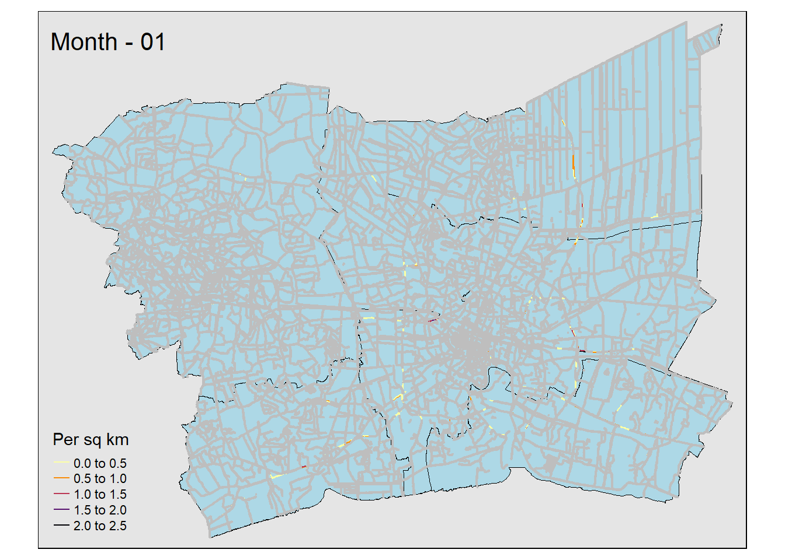
monthly[[2]]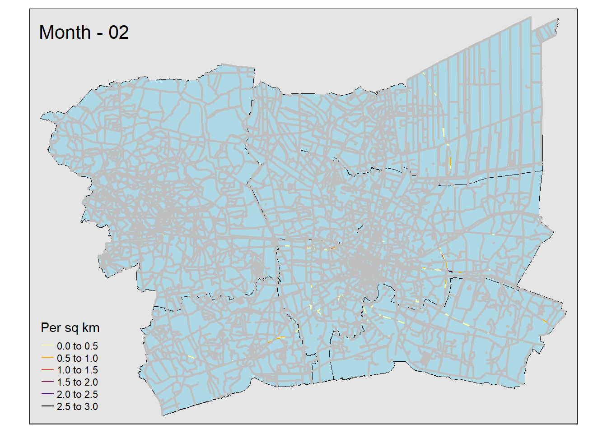
monthly[[3]]monthly[[4]]monthly[[5]]monthly[[6]]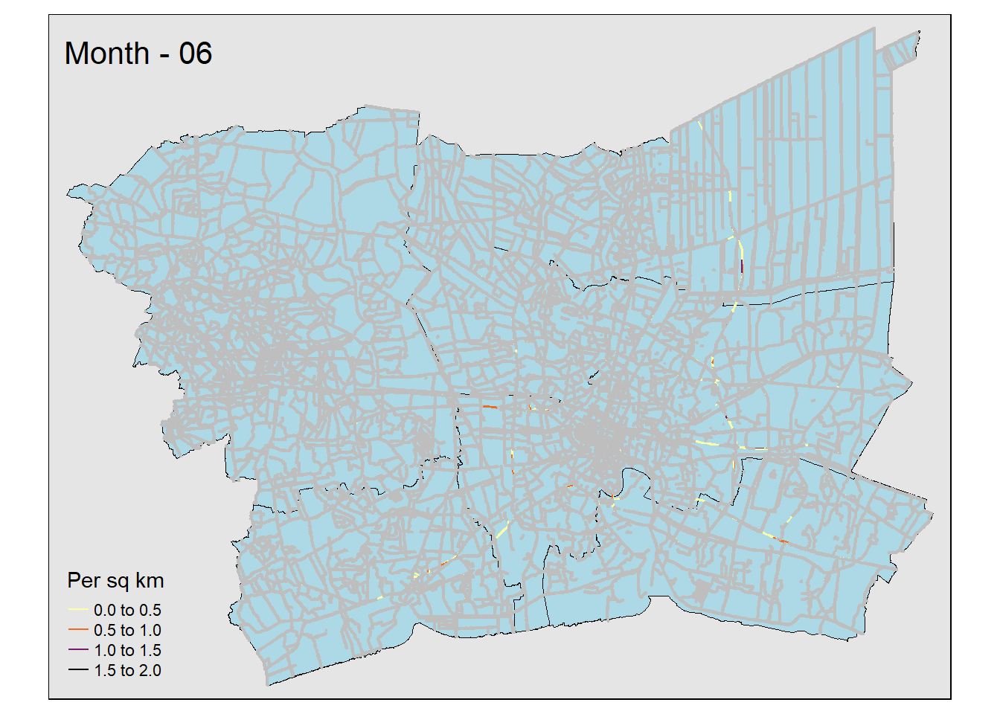
monthly[[7]]monthly[[8]]monthly[[9]]monthly[[10]]monthly[[11]]monthly[[12]]The output shows a few hotspots arising on specific months. We mention the ones where there are highly dense segments outside Bangkok:
Pathum Thani - January, March, June
Samut Sakhon - January
E.6 Fatal Accidents
As mentioned in the earlier section, only a small 6% or 719 of the total number of accidents were fatal. While small, this is still a large number for the affected families. We expect that such accidents would have also caused more disruption compared to most of the non-fatal ones.
E.6.1 Fatal Accidents by Year and by Province, Non-Network Constrained
If we look at the distribution of these accidents across years using the chart below, the annual number has ranged from 153-203, and 2020 and 2021 had 33% more accidents than the other years.
ggplot(filter(bmracc, number_of_fatalities > 0), aes(x = reorder(Year, table(Year)[Year]))) +
geom_bar() +
ggtitle("Number of Fatal Accidents by Year") +
theme_minimal() +
geom_text(stat='count', aes(label=..count..), vjust = +2) +
theme(
plot.title = element_text(hjust = 0.5, size = 16, face = "bold"),
axis.title.x = element_text(size = 15),
axis.title.y = element_text(size = 12),
axis.text.y = element_blank(),
axis.text.x = element_text(size = 12),
panel.grid.major = element_blank(),
panel.grid.minor = element_blank()
) +
labs(x = "", y = "")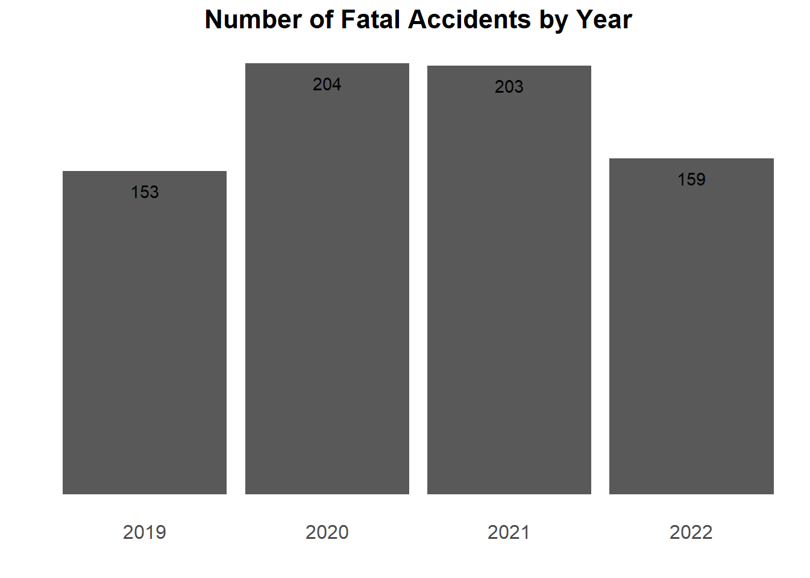
We can then visualize the location of these using the tmap package. The code below displays a map of the location of the fatal accidents in BMR between 2019 and 2022.
tm_shape(bmr_boundary)+
tm_polygons(col = "ADM1_EN", palette = "Blues", border.col = "black", lwd = 0.5, title = "Province")+
tm_shape(bmr_network_v2)+
tm_lines(col="grey", lwd = 2) +
tm_shape(filter(bmracc, number_of_fatalities > 0)) +
tm_dots(col="red", size = 0.1) +
tm_layout(title = "BMR Fatal Road Accident Density - 2019-2022",
title.position = c("left", "top"),
legend.position = c("left", "bottom"),
bg.color = "grey90")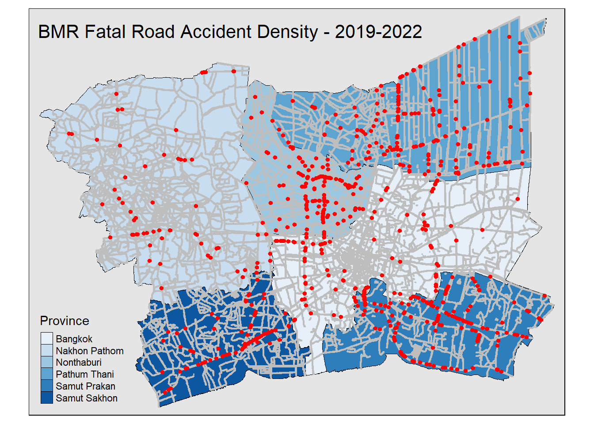
It looks like fatal accidents are more frequent outside Bangkok. With the exception of Nakhon Pathom, it looks like there is a larger number of accidents, in number and in density, happening in the four other provinces.
It is hard to judge whether or not there are more accidents in a province using the graph above because of the presence of close or overlapping dots. One approach is to use the functions from sf package to count the accidents or events that fall within each province and then also compute for a density by computing the areas of each province.
We first compute for the number of fatal accidents that occur in each province by using st_intersects() function from sf package. We produce this for the total number of accidents and the accidents for each year by using the code chunk below. We create a copy of the bmr_boundary object to store these values.
bmr_with_fatacc <- bmr_boundary %>%
mutate('FatAcc19-22' = lengths(st_intersects(bmr_boundary,filter(bmracc, number_of_fatalities > 0)))) %>%
mutate('FatAcc19' = lengths(st_intersects(bmr_boundary,filter(bmracc, (number_of_fatalities > 0) & (Year == 2019) )))) %>%
mutate('FatAcc20' = lengths(st_intersects(bmr_boundary,filter(bmracc, (number_of_fatalities > 0) & (Year == 2020) )))) %>%
mutate('FatAcc21' = lengths(st_intersects(bmr_boundary,filter(bmracc, (number_of_fatalities > 0) & (Year == 2021) )))) %>%
mutate('FatAcc22' = lengths(st_intersects(bmr_boundary,filter(bmracc, (number_of_fatalities > 0) & (Year == 2022) ))))We then compute for the area of each province using st_area() in the code chunk below.
bmr_with_fatacc$Area <- st_area(bmr_with_fatacc)Finally, we can compute for the density of accidents in each province by taking the ration of the last two measures we computed. Note that we are multiplying each by 1 million to convert the units from per meter to per square kilometer.
bmr_with_fatacc$FatDensAll <- bmr_with_fatacc$`FatAcc19-22` / bmr_with_fatacc$Area * 1000000
bmr_with_fatacc$FatDens19 <- bmr_with_fatacc$`FatAcc19` / bmr_with_fatacc$Area * 1000000
bmr_with_fatacc$FatDens20 <- bmr_with_fatacc$`FatAcc20` / bmr_with_fatacc$Area * 1000000
bmr_with_fatacc$FatDens21 <- bmr_with_fatacc$`FatAcc21` / bmr_with_fatacc$Area * 1000000
bmr_with_fatacc$FatDens22 <- bmr_with_fatacc$`FatAcc22` / bmr_with_fatacc$Area * 1000000We can now compare the occurence of fatal accidents across provinces visually. First, we can produce a choropleth map for the number of accidents and the density of accidents side by side using the code below. This is done by passing a list of arguments for the different tmap elements. In the code below, we use this on the color of the polygons, the label and the chart title.
tm_shape(bmr_with_fatacc)+
tm_polygons(col = c('FatAcc19-22', 'FatDensAll'), style = "equal", palette = "Blues", border.col = "black", lwd = 0.5, title = c("Number", "Per Sq Km"))+
tm_shape(filter(bmracc, number_of_fatalities > 0)) +
tm_dots(col="red", size = 0.1) +
tm_layout(title = c("Fatal Road Accidents 19-22","Fatal Road Accidents Density"),
title.position = c("left", "top"),
legend.position = c("left", "bottom"),
bg.color = "grey90")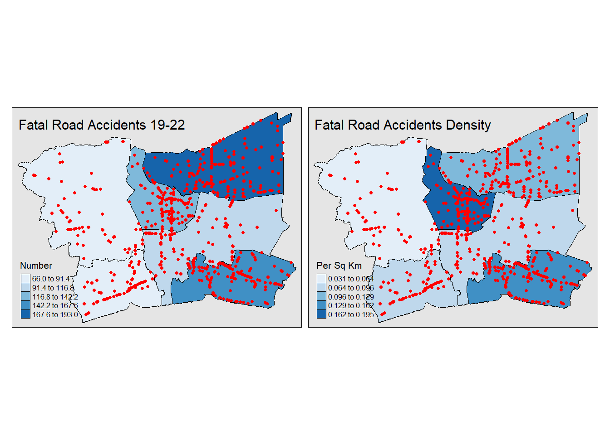
The plot shows that Pathum Thani in the northeast and Samut Prakan in the southeast have the highest number of accidents. However, if we normalize by the area, Nonthaburi in the center and Samut Prakan, still, have the highest density of fatal accidents.
We can use the same approach to look at the density across the different years.
tm_shape(bmr_with_fatacc)+
tm_polygons(col = c('FatDens19', 'FatDens20', 'FatDens21', 'FatDens22'), style = "equal", palette = "Blues", border.col = "black", lwd = 0.5, title = "Per Sq Km")+
tm_shape(filter(bmracc, number_of_fatalities > 0)) +
tm_dots(col="red", size = 0.1) +
tm_layout(title = c("2019 Fatal Accidents","2020 Fatal Accidents","2021 Fatal Accidents","2022 Fatal Accidents"),
title.position = c("left", "top"),
legend.position = c("left", "bottom"),
bg.color = "grey90")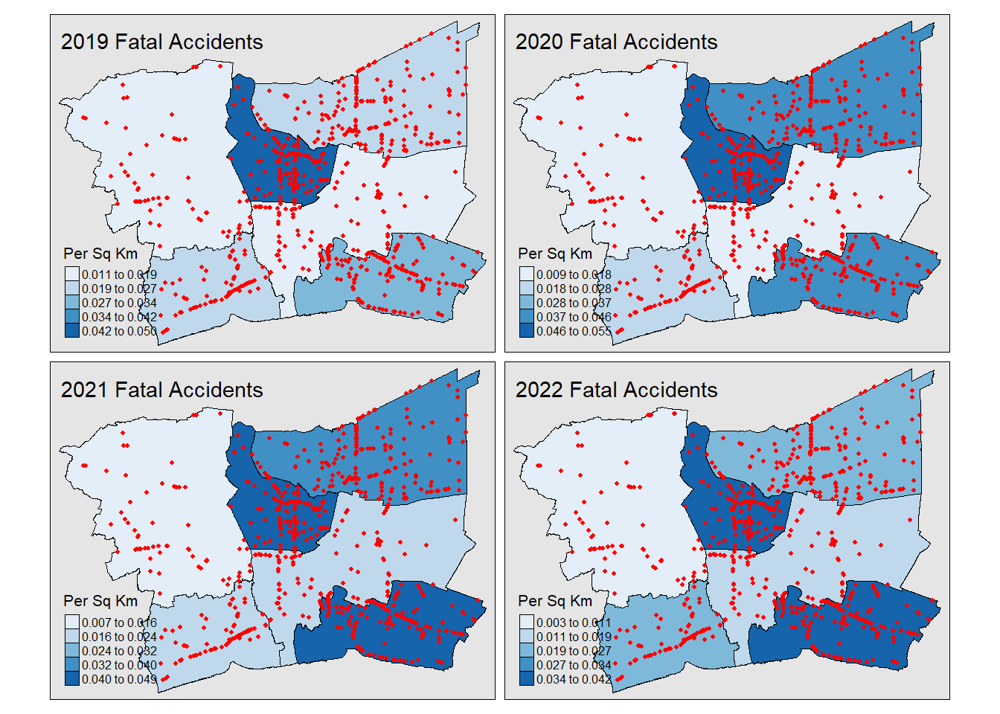
At a province-level, Nonthaburi has been consistently the most dense with regards to fatal road accidents. In the meantime, Samut Prakan appears to have increased its density and risen in rank between 2020 and 2021.
We will not attempt to perform kde on this set of accidents and go straight to an nkde which considers the road network.’
E.6.2 Fatal Accidents, Network Constrained
The final analyses we will perform is on the distribution of the fatal accidents along the road network. For this, we will also focus only on one year– 2022, as we recognize a shift in the hotspots over the years, at least across provinces
To facilitate the analysis, we create a subset of the accident dataset to only consider fatal accidents and the latest year.
bmr_fatacc_2022 <- filter(bmracc, (number_of_fatalities > 0) & (Year == 2022) )bmr_fatacc_2022Simple feature collection with 159 features and 21 fields
Geometry type: POINT
Dimension: XY
Bounding box: xmin: 610274.5 ymin: 1489002 xmax: 706582.6 ymax: 1570658
Projected CRS: WGS 84 / UTM zone 47N
# A tibble: 159 × 22
acc_code incident_datetime report_datetime province_th province_en
* <dbl> <dttm> <dttm> <chr> <chr>
1 5484851 2022-01-01 02:30:00 2022-01-02 02:43:00 สมุทรปราการ Samut Prakan
2 5493686 2022-01-01 05:30:00 2022-01-03 10:23:00 นนทบุรี Nonthaburi
3 5493725 2022-01-01 14:00:00 2022-01-03 10:28:00 นครปฐม Nakhon Pathom
4 6950193 2022-01-03 21:00:00 2022-09-21 10:53:00 นนทบุรี Nonthaburi
5 5837858 2022-01-03 23:34:00 2022-03-03 14:19:00 กรุงเทพมหานคร Bangkok
6 6567040 2022-01-04 21:19:00 2022-01-05 11:27:00 สมุทรปราการ Samut Prakan
7 6567055 2022-01-09 22:00:00 2022-01-11 10:56:00 ปทุมธานี Pathum Thani
8 5861456 2022-01-11 18:00:00 2022-03-07 11:28:00 สมุทรปราการ Samut Prakan
9 5579080 2022-01-15 00:10:00 2022-01-15 09:11:00 กรุงเทพมหานคร Bangkok
10 5843213 2022-01-16 11:30:00 2022-03-04 10:48:00 ปทุมธานี Pathum Thani
# ℹ 149 more rows
# ℹ 17 more variables: agency <chr>, route <chr>, vehicle_type <chr>,
# presumed_cause <chr>, accident_type <chr>,
# number_of_vehicles_involved <dbl>, number_of_fatalities <dbl>,
# number_of_injuries <dbl>, weather_condition <chr>, road_description <chr>,
# slope_description <chr>, geometry <POINT [m]>, Year <dbl>, MonthNum <dbl>,
# Month <ord>, DayOfWeek <ord>, fatal <lgl>There are 159 fatal accidents in the BMR in 2022, and in the new dataset– consistent with the summary in the previous section.
We then use the following code chunk to compute for the network-constrained KDE of the 2022 fatal accidents in our network. Note that in the code, we create a duplicate lixels and samples object to keep the original one unchanged. We take this opportunity to widen the computation range by increasing the bandwidth or bw parameter and the max_depth parameter.
samples_22 <- samples_v2
lixels_22 <- lixels_v2
densities <- nkde(bmr_network_v2,
events = bmr_fatacc_2022,
w = rep(1, nrow(bmr_fatacc_2022)),
samples = samples_22,
kernel_name = "quartic",
bw = 10000,
div= "bw",
method = "simple",
digits = 1,
tol = 1,
grid_shape = c(10,10),
max_depth = 20,
agg = 5,
sparse = TRUE,
verbose = FALSE)
samples_22$density_22 <- densities*1000000
lixels_22$density_22 <- densities*1000000We can then use the following codeblock to visualize the nKDE using tmap package.
tm_shape(bmr_boundary)+
tm_polygons(col = "ADM1_EN", palette = "Blues", border.col = "black", lwd = 0.5, title = "Province")+
tm_shape(lixels_22)+
tm_lines(col="density_22", palette = "-inferno", lwd = 2, title.col = "Per sq km") +
tm_shape(filter(lixels_22, density_22 == 0)) +
tm_lines(col="grey", lwd = 2) +
tm_layout(title = "BMR Fatal Road Accident Density - 2022",
title.position = c("left", "top"),
legend.position = c("left", "bottom"),
bg.color = "grey90")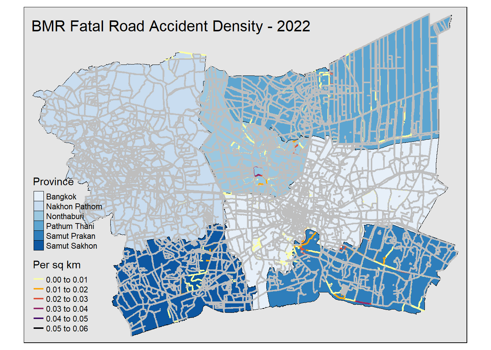
F. Conclusion
We have used techniques to visualize and analyze the road traffic accidents in the Bangkok Metropolitan Region. The location of accidents is not random. There are some shifts seen in the location of hotspots across the years and across months. We have shown these using KDE and nKDE. We then focused on fatal accidents and see an increasing trend for Samut Prakan, while Nonthaburi has consistently been the most dense with regards to fatal road accidents. Further study on why these two provinces are the “deadliest” need to be conducted to understand if there are any features of these regions that are driving the higher incidence of fatal accidents.